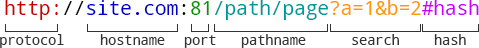

XML
eXtensible Markup Language – расширяемый язык разметки, основанный на тегах и четкой структуре.
HTML
Hyper Text Markup Language – язык гипертекстовой разметки, это стандартизированный формат разметки документов в интернете. Именно интерпритацией HTML и занимаются браузеры. HTML как и другие XML-подобные языки разметки представляет собой набор данных обернутых в теги.
HTTP
Hyper Text Transfer Protocol (протокол передачи гипертекста) - это просто тупо короткий набор правил составления сообщений, для того чтобы клиент и сервер могли понимать друг друга, то есть верно интерпретировать сообщения друг друга. Протокол HTTP представляет собой общение между хостами в формате «запрос-ответ» или «request-reqsponse». Например, я с компьютера отправляю запрос на сервер Google, а он отправляет мне свой ответ.
| Request | Response |
|
GET /index.php HTTP/1.1 Host: example.com User-Agent: Mozilla/5.0 (X11; Linux i686;) Accept: text/html Connection: close |
HTTP/1.0 200 OK Server: nginx/0.6.31 Content-Language: ru Content-Type: text/html; charset=utf-8 Content-Length: 1234 <!doctype html> … остаток документа |
Каждое HTTP-сообщение состоит из трех частей: стартовая строка, заголовки и тело. При этом обязательной является только стартовая строка. Стартовые строки для запроса и ответа имеют различный формат.
Стартовая строка:
В стартовой строке запроса указывается METHOD URI HTTP/VERSION где
METHOD — это как раз метод HTTP-запроса,
URI — идентификатор ресурса,
VERSION — версия протокола (на данный момент актуальна версия 1.1, как и последние 15 лет).
В стартовой строке ответа указывается HTTP/VERSION Status Code Reasone Phrase где
VERSION — версия протокола,
Status Code – код состояния,
Reasone Phrase – пояснение.
Заголовки:
Это набор пар ключ:значение, в которых передается служебная информация такая как кодировка, название и версия браузера, и тд
Тело сообщения:
Это передаваемые данные, как правило html-страница.
Request methods
Тип HTTP-запроса (также называемый HTTP-метод), указывает серверу какое действие мы хотим провести с ресурсом, указаннам в URI. В начале 90-х существовал только один метод – метод GET для получения информации, но после придумал и другие.
| GET | Получение ресурса |
| POST | Создание ресурса |
| PUT | Обновление ресурса |
| DELETE | Удаление ресурса |
Response codes
| 200 | OK |
| 301 | Moved Permanently |
| 302 | Found |
| 401 | Unauthorized |
| 403 | Forbidden |
| 404 | Not Found |
| 500 | Internal Server Error |
URI и URL
Uniform Resource Indentifier – единообразный идентификатор ресурса, то есть просто символьная строка позволяеющая уникально идентифицировать какой то ресурс. Ресурс это как правило файл на сервере, например ‘styles.css’. URL (Uniform Resource Locator) – это URI, который, помимо идентификации ресурса, предоставляет ещё и информацию о местонахождении этого ресурса.
Разбор URL-адреса
Типичная структура URL
Передача данных отображается в адресной строке браузера. Это нам не всегда нужно. Потому что иногда мы хотим передать например пароль. Для этого и придумали HTTPS протокол.
HTTPS
Hyper Text Transfer Protocol Secure – это HTTP протокол использующий шифрование. Очень полезен для передачи приватных данных.
Cookie
Cookie – это небольшие кусочки информации, которые сервер отправляет клиенту, чтобы тот хранил их у себя, и при следующих запросах отдавал обратно серверу. Например, пользователь авторизовался на главное странице сайте, тогда сервер создаст объект сессии на этом сервере для этого пользователя, а уникальный номер для этой сессии передает клиенту в виде Cookie. При следующем запросе от клиента к серверу, этот номер сессии вместе с другими Cookie будет отправлен на сервер. Так сервер узнает пользователя.
JSON
JavaScript Object Notation – текстовый формат передачи данных основанный на JavaScript, котоырй передает объект в формате ключи-значение, значениями могут быть другие объекты, массивы, или просто значения.